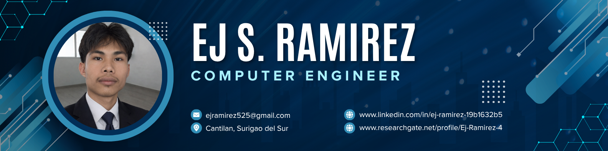

01
Java
OOP and software fundamentals
 EJ S. RamirezPortfolio
EJ S. RamirezPortfolio
Computer Engineering / Surigao del Sur
I am a Computer Engineering professional, educator, and researcher working across Edge AI, computer vision, embedded systems, and software engineering education.

About the work
I design intelligent systems that bridge software, hardware, and practical deployment on devices like Raspberry Pi and microcontrollers.
My work moves between the classroom, the lab, and the command line. Each space sharpens the same goal: make complex technology useful, understandable, and ready for the real world.
Teaching practice
Concepts become memorable when students can build with them.
OOP and software fundamentals
Application development and logic

Web structure and user experience

Interactive web development
Database systems and SQL

Hardware maintenance and troubleshooting
Research direction
Exploring how intelligent applications can become more responsive, private, and available when computation happens closer to the people and devices using it.
Start a research conversation ↗Featured work
Selected projects from deep learning, embedded systems, and applied sensing.
Computer vision and intelligent classifiers.
Load cell + TOF10120 laser sensing.
Arduino Mega, RFID, sensors, and asynchronous scheduling.
Multi-layer perceptron architecture with bird dataset.
Core expertise
Credentials
Education, experience, and certifications that keep the practice moving.

Mapúa University · Intramuros, Manila

North Eastern Mindanao State University · Cantilan

Saint Michael College, Cantilan, Incorporated


Let's connect
I’m open to collaborations in Edge AI, computer vision, embedded intelligence, and research-driven engineering.